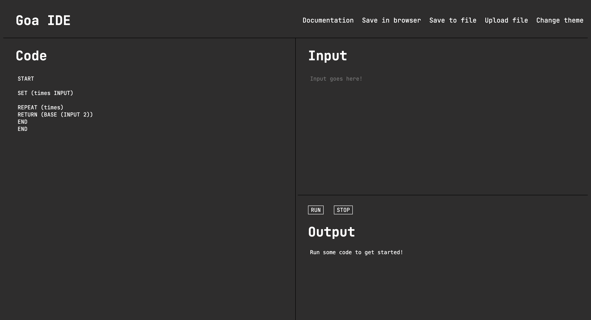
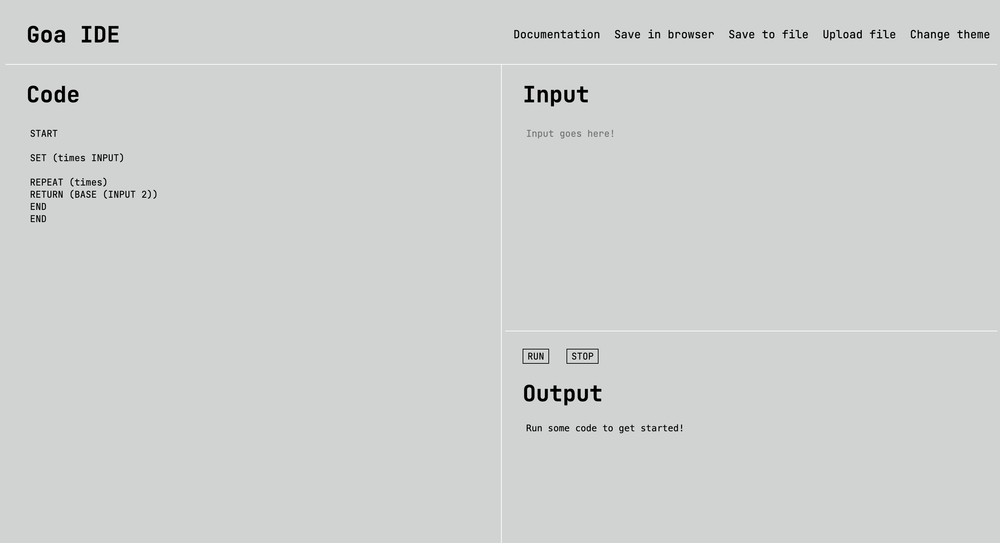

Introduction
Welcome to Goa 0.9 Beta!
Goa is a small expression-based programming language, designed to be lightweight and easy for people to understand and learn. It uses a clean, parentheses-driven syntax inspired by languages like Lisp. It deals exclusively with numbers, allowing for people to experiment with logic and automate tasks that deal with integers and floats.
Goa is designed to be
- easily understandable
- expandable
- and customizable
Goa is open source, allowing for users to change the code to suit their needs.
Some important features of Goa...
- All functions have either 1 or 2 arguments inside parentheses, making it easy to understand and remember what functions do.
IF, ELSE IF, ELSE, WHILE,andREPEATblocks all haveENDstatements to make it easy to see where they end.- Goa ignores whitespace and formatting like indentation.
- Goa is safe and deterministic, as rules are strict to allow for no unpredictability.
- The IDE is complete with browser saving and file downloading and uploading.
Goa 0.9 Beta means that Goa is getting close to a full release!
Up to the 0.8 Beta, the developer added all the basic statements that gave Goa its structure.
In 0.8 Beta, the developer fixes some bugs involving parsing the code.
In 0.9 Beta, the developer added support for floats, added the <= and >= comparators, the FDIV, TOINT, TOFLOAT, and ROOT statements, and made changes to the EXP, BASE, and DIV statements.
Before the 1.0 full release, he plans to add more comparators and statements.
Getting Started with the IDE
So, you want to use Goa. What's first?
First, click the IDE tab in the top right of the navbar. You should see something like the image below:

A screenshot of the Goa Web IDE.
You will notice that there are 4 main sections.
The Navbar
The Navbar contains 5 buttons.
The first one, Documentation, opens up this website. This is for you to refer to in case you ever forget anything about Goa.
Next is the Save in browser button. It saves whatever code you currently have in the code area to localstorage, allowing it to load up whenever you open the web IDE>
Thirdly is the Save to file button. It saves whatever code you currently have in the code area to a .goa file on your computer.
Fourth is the Upload file button. It allows you to upload code from a .goa file on your computer.
Finally, there is the Change theme button. It allows you to change the theme of the web IDE between light and dark mode.

A screenshot of the Goa Web IDE in light mode.
The Code
Located on the left half of the screen, this is where you place your code!
Every program must have a START and an END statements. Without them, your program will not compile. For example, if you have the following program:
START
RETURN (4)
You will recieve the following error message: ERROR: Program must have one START and one END.
Make sure to save your code often! The Goa Web IDE currently does not support auto-saving.
The Input
Located in the top of the right half of the screen, this is where you place your input!
Goa only deals with integers and floats, so all inputs should be numbers. Numbers should be separated by spaces, but other than that, it doesn't matter.
1 4
the same as
1
4
or
1
4
As long as the numbers are separated!
You can take input by running the INPUT statement. The INPUT statement must be used with another statement, like the SET statement to assign it to a variable, or the RETURN statement to print it out, just to name a few. Each INPUT will take the next number in your input. Goa will not return an error if there are more inputs than you pull for in your code, but it will return ERROR: No more input available. if the number of inputs available are less than the number that you pull for.
You can learn more by going to INPUT section!
The Output
Located in the bottom of the right half of the screen, this is where the program returns output and errors!
In order to make the program print something out in the output, you must use the RETURN statement. You can learn more by going to the RETURN section!
Syntax
The syntax of Goa can be divided into several sections.
Program Structure
Every program in Goa must have a START and END statement.
If you do not, you will recieve the following error message: ERROR: Program must have one START and one END.
Statement Syntax
All statements in Goa follow this syntax:
STATEMENT (argument argument)
Depending on what statement you are using, you may have to use 1 or 2 arguments. It does not matter if you place a space between the statement and the parentheses. For example,
ADD (1 2)
is the same as
ADD(1 2)
or even
ADD (1 2)
As well as that, it doesn't matter how many spaces are between the arguments (if 2 arguments are required) as long as there is a space between them.
However, it is important to note that parentheses are always needed. If you do not place a parentheses in the correct spot, you will get an error. For example, in the program below:
START # note the start and end statements
RETURN (3
END
The user has failed to add an extra parenthese needed, causing an error message to return.
ERROR: Missing parentheses in: RETURN (3
Adding too many parentheses will also return an error message
START
RETURN (3))
END
And will return this error message:
ERROR: Unexpected extra tokens
As well as that, nested statements are allowed. For example,
RETURN (ADD (2 MULT (2 3)))
will return 2 + (2 x 3), which is 8.
Comment Syntax
To make a comment in your code, simply use a # symbol. For exmaple, typing # hello world will cause the compiler to skip over it. Inline comments are also allowed, allowing you to type things like:
RETURN (ADD (INPUT 2)) # this allows you to print out the sum of the input and 2.
All on the same line.
Float Syntax
As of Goa 0.9 Beta, Goa can now handle flaots. That means Goa can handle numbers like 0.8 and 1.55. When writing floats, anything with a decimal will be counted as float. That includes numbers like .6, 6.5, 6., and 6.0. However, anything with more than one decimal point will be rejected, like 5.5.3.
Statements
In Goa, only integers and floats are used. That means that there is no support for strings.
Here is a list of all statements in Goa.
START and END
To mark the start of a program, use the START statement.
To mark the end of a program, use the END statement.
Every program needs these two statements. Otherwise, you will recieve the following error: ERROR: Program must have one START and one END.
If there is no START or END, there will be an error.
If there are multiple START and END (excpet for Logic Statements) statements, there will be an error.
SET
To set a variable to a value, use the following statement
SET (variable argument)
Where the variable is the name of the variable and argument is the value.
For example, to set a variable x to 10, run
SET (x 10)
Math Statements
Math functions on their own do not do anything. They just run, but will not return anything or be assigned to a variable. Use the correct statements for that (SET and RETURN).
In Goa, there is safe promotion. That means adding two integers will produce an integer, but any calculation involving a float will always return a float.
All math functions round to the nearest whole number.
ADD
To add two numbers, use the following statement
ADD (argument argument)
The ADD statement ONLY supports 2 values. Otherwise, you will get an error. To add multiple numbers, run
ADD (argument ADD (argument argument))
to add 3 numbers. Nested statements are allowed, so you can repeat this for as many numbers as you need.
For example, to add 2 and 5, run
ADD (2 5)
To add 2 5 and 7, run
ADD (2 ADD (5 7))
SUB
To subtract two numbers, use the following statement
SUB (argument argument)
Where the second argument is subtracted from the first.
The SUB statement ONLY supports 2 values. Otherwise, you will get an error. To subtract multiple numbers, run
SUB (SUB (argument argument) argument)
to subtract 3 numbers. Nested statements are allowed, so you can repeat this for as many numbers as you need.
For example, to do 5 - 2, run
SUB (5 2)
To do 7 - 5 - 2, run
SUB (SUB (7 5) 2)
MULT
To multiply two numbers, use the following statement
MULT (argument argument)
The MULT statement ONLY supports 2 values. Otherwise, you will get an error. To multiply multiple numbers, run
MULT (argument MULT (argument argument))
to multiply 3 numbers. Nested statements are allowed, so you can repeat this for as many numbers as you need.
For example, to multiply 2 and 5, run
MULT (2 5)
To multiply 2 5 and 7, run
MULT (2 MULT (5 7))
DIV
To divide two numbers and get an integer answer, use the following statement
DIV (argument argument)
Where the first argument is divided by the second. The answer will be rounded.
The DIV statement ONLY supports 2 values. Otherwise, you will get an error. To divide multiple numbers, run
DIV (argument DIV (argument argument))
to divide 3 numbers. Nested statements are allowed, so you can repeat this for as many numbers as you need.
For example, to do 8 divided by 4, run
DIV (8 4)
To do 8 divided by 2 divided by 4, run
DIV (DIV (8 2) 4)
FDIV
To divide two numbers, use the following statement
FDIV (argument argument)
Where the first argument is divided by the second.
The FDIV statement ONLY supports 2 values. Otherwise, you will get an error. To divide multiple numbers, run
FDIV (argument FDIV (argument argument))
to divide 3 numbers. Nested statements are allowed, so you can repeat this for as many numbers as you need.
For example, to do 8 divided by 5, run
FDIV (8 5)
To do 8 divided by 5 divided by 2, run
FDIV (FDIV (8 5) 2)
EXP
To do exponentials, use the following statement
EXP (argument argument)
Where the first argument is raised to the power of the second argument.
The EXP statement ONLY supports 2 values. Otherwise, you will get an error. To exponent a number multiple times, run
EXP (EXP (argument argument) argument)
to exponent a number 2 times. Nested statements are allowed, so you can repeat this for as many numbers as you need.
For example, to do 5 squared, run
EXP (5 2)
To do 5 squared cubed, run
EXP (EXP (5 2) 3)
As of 0.9 Beta, Goa does not support negative exponents. To do roots, use the ROOT statement below.
ROOT
To do roots, use the following statement
ROOT (argument argument)
Where the second argument is n and the nth root is taken of the first argument.
The ROOT statement ONLY supports 2 values. Otherwise, you will get an error. To root a number multiple times, run
ROOT (ROOT (argument argument) argument)
to root a number 2 times. Nested statements are allowed, so you can repeat this for as many numbers as you need.
For example, to do the square root of 5, run
ROOT (5 2)
To do the third root of the square root of 5, run
ROOT (ROOT (5 2) 3)
The ROOT statement requires the second argument to be over 0 and for the second argument to not be even if the first argument is odd.
BASE
To convert numbers between bases, use the following statement
BASE (argument argument)
Where the first argument is converted to the base of the second.
The BASE statement ONLY supports 2 values. Otherwise, you will get an error. To convert a number's base multiple times, run
BASE (BASE (argument argument) argument)
to change a number's base 2 times. Nested statements are allowed, so you can repeat this for as many numbers as you need.
For example, to conver 5 to base 2, run
BASE (5 2)
To conver 5 in binary to base 3, run
BASE (BASE (5 2) 3)
As of 0.9 Beta, Goa only takes integers for both arguments.
ABS
To find the absolute value of a number, use the following statement
ABS (argument)
Where the absolute value of the argument is given.
The ABS only needs 1 argument. If more are given, they will be ignored.
For example, to find |-16|, run
ABS (-16)
MOD
To do modular division, use the following statement
MOD (4 2)
Where the remainder of the 4 divided by 2 is given.
The MOD statement ONLY supports 2 values. Otherwise, you will get an error. To modularly divide multiple numbers, run
MOD (MOD (argument argument) argument)
to modularly divide a number 2 times. Nested statements are allowed, so you can repeat this for as many numbers as you need.
For example, to do 5 mod 2, run
MOD (5 2)
To do 15 mod 6 mod 2, run
MOD (MOD (15 6) 2)
RAND
To find a random number (inclusive), run the following statement
RAND (argument argument)
Where a random number is generated inclusive between the minimum value (the first argument) and the maximum (the second argument).
The SUB statement ONLY supports 2 values. Otherwise, you will get an error.
For example, to generate a random number between 1 and 10 (inclusive), run
RAND (1 10)
MIN
To find the smaller of 2 numbers, use the following statement
MIN (argument argument)
Where the smaller argument is given.
The MIN statement ONLY supports 2 values. Otherwise, you will get an error.
For example, to find the smaller of 2 and 14, run
MIN (2 14)
MAX
To find the larger of 2 numbers, use the following statement
MAX (argument argument)
Where the larger argument is given.
The MAX statement ONLY supports 2 values. Otherwise, you will get an error.
For example, to find the larger of 2 and 14, run
MAX (2 14)
TOINT
To convert a number to an integer, use the following statement
TOINT (argument)
Where the argument will be rounded to the nearest number.
The TOINT only needs 1 argument. If more are given, they will be ignored.
For example, to convert the float 1.7 to an integer, run
TOINT (1.7)
TOFLOAT
To convert a number to an float, use the following statement
TOFLOAT (argument)
Where the argument will be converted into a float.
The TOFLOAT only needs 1 argument. If more are given, they will be ignored.
For example, to convert the integer 3 to an float, run
TOFLOAT (3)
INPUT
To take the next number in input, use the following statement
INPUT
However, by itself, it does nothing. You must put it inside another statement, like a SET, Math statement, RETURN, etc.
INPUT will return an error if there are no more numbers in the input area.
For example, to add 2 to the number in input, run
ADD (2 INPUT)
RETURN
To print something out in the output area, use the following statement
RETURN (argument)
Where the argument is printed out in the output area.
The RETURN statement only supports 1 value. It will ignore any extra values.
For example, to print out the number 15, run
RETURN (15)
Logic Statements
All logic statements in Goa use an END statement to mark where they end.
Comparators
There are 4 comparators in Goa.
<- Use this comparator for "less than">- Use this comparator for "greater than"=- Use this comparator for "equal to"!=- Use this comparator for "not equal to"<=- Use this comparator for "less than or equal to">=- Use this comparator for "greater than or equal to"
Use these in the logic statements below.
REPEAT
REPEAT statements in Goa are for loops. They repeat a block of code for a set amount of times. To use them, follow the format below:
REPEAT (argument)
# code
END
Where the argument tells you how many times to repeat it. The END statement is important because it marks where the code block ends. Without it, you will get an error message.
For example, if you wanted to print out the number 10 5 times, you would run:
REPEAT (5)
RETURN (10)
END
IF
IF statements in Goa also include the ELSE IF and ELSE blocks. They allow you to check if a condition is true.
The basic format of IF blocks is shown below.
IF (statement)
# code
END
ELSE IF (statement) # you can add as many as you want - they are optional
# code
END # notice how every block has an END statement
ELSE # no statement, they are optional, but only add one
# code
END
Statements are created with comparators. An example of a statement with a comparator is (x > 10). So if this was true, it would activate that code block and skip all blocks below it.
ELSE IF and ELSE blocks are optional. You can add as many ELSE IF blocks as you want but only 1 ELSE block. Notice how each block has an END tag.
WHILE
WHILE statements repeat a block of code until a condition is satisfied. Make sure that the condition can be satisfied so it doesn't run forever.
The basic format of WHILE statements is shown below.
WHILE (statement)
# code
END
The statement is created with comparators. An example of a statement with a comparator is (x < 10). So in a WHILE block, while x is less than 10, the code will run.
For example, you can use it to return numbers in increasing order.
SET (x 0)
WHILE (x < 10)
SET (x ADD (x 1))
RETURN (x)
END
Errors
Coming to this documentation soon!
Examples
The following example scripts are now outdated as of 0.9 Beta and will be replaced soon.
Sum of Numbers 1 to N
This program takes in a number (N), and finds the sum of all numbers from 1 to N.
START
SET (n ADD (INPUT 1)) # we add 1 to n, because as of Goa 0.8 Beta, there is no "<=" comparator
SET (counter 1)
SET (sum 0)
WHILE (counter < n) # to see an easier way to do while loops, see the Fibonnaci Sequence program
SET (sum ADD (sum counter))
SET (counter ADD (counter 1))
END
RETURN (sum)
END
Number Parity Checker
This program takes in a number, and determines if it is even or odd. If it is even, it will output 0 and if it is odd it will output 1
START
SET (n INPUT)
SET (r MOD (n 2))
IF (r = 0)
RETURN (0)
END
ELSE
RETURN (1)
END
END
Reverse Countdown
This program will take a number and count down from that number.
START
SET (n INPUT)
SET (counter n)
WHILE (counter > 0)
RETURN (counter)
SET (counter SUB (counter 1))
END
RETURN (0) # optional if you want to return a 0 at the end of the countdown
END
Factorials
This program finds the factorial of a number given.
START
SET (n ADD (INPUT 1)) # just like in the sum of numbers program above, we add 1 because Goa 0.8 Beta has no "<="
SET (counter 1)
SET (result 1)
WHILE (counter < n)
SET (result MULT (result counter))
SET (counter ADD (counter 1))
END
RETURN (result)
END
Fibonacci Sequence
This program prints Fibonacci numbers up to the nth number, where n is taken from the input.
START
SET (a 0)
SET (b 1)
SET (count INPUT)
WHILE (count > 0) # you can also make while loops simpler by doing this
RETURN (a)
SET (temp ADD (a b))
SET (a b)
SET (b temp)
SET (count SUB (count 1))
END
END